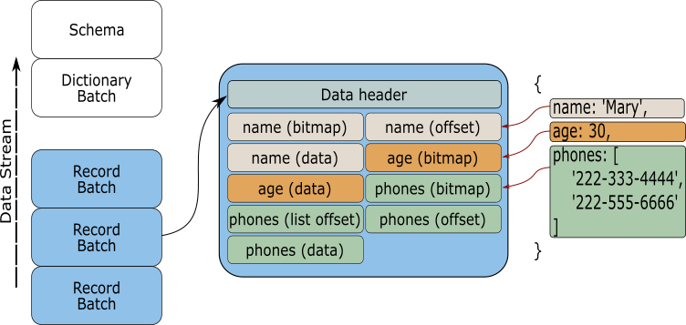

Introduction
Welcome to the Apache Arrow guide for the Rust programming language. This guide was created to help you become familiar with the Arrow crate and its functionalities.
What is Apache Arrow?
According to its website Apache Arrow is defined as:
A language-independent columnar memory format for flat and hierarchical data, organized for efficient analytic operations on modern hardware like CPUs and GPUs. The Arrow memory format also supports zero-copy reads for lightning-fast data access without serialization overhead.
After reading the description you have probably come to the conclusion that Apache Arrow sounds great and that it will give anyone working with data enough tools to improve a data processing workflow. But that's the catch, on its own Apache Arrow is not an application or library that can be installed and used. The objective of Apache Arrow is to define a set of specifications that need to be followed by an implementation in order to allow:
- fast in-memory data access
- sharing and zero copy of data between processes
Fast in-memory data access
Apache Arrow allows fast memory access by defining its in-memory columnar format. This columnar format defines a standard and efficient in-memory representation of various datatypes, plain or nested (reference).
In other words, the Apache Arrow project has created a series of rules or specifications to define how a datatype (int, float, string, list, etc.) is stored in memory. Since the objective of the project is to store large amounts of data in memory for further manipulation or querying, it uses a columnar data definition. This means that when a dataset (data defined with several columns) is stored in memory, it no longer maintains its rows representation but it is changed to a columnar representation.
For example, lets say we have a dataset that is defined with three columns named: session_id, timestamp and source_id (image below). Traditionally, this file should be represented in memory maintaining its row representation (image below, left). This means that the fields representing a row would be kept next to each other. This makes memory management harder to achieve because there are different datatypes next to each other; in this case a long, a date and a string. Each of these datatypes will have different memory requirements (for example, 8 bytes, 16 bytes or 32 bytes).

By changing the in memory representation of the file to a columnar form (image above, right), the in-memory arrangement of the data becomes more efficient. Similar datatypes are stored next to each other, making the access and columnar querying faster to perform.
Sharing data between processes
Imagine a typical workflow for a data engineer. There is a process that is producing data that belongs to a service monitoring the performance of a sales page. This data has to be read, processed and stored. Probably the engineer would first set a script that is reading the data and storing the result in a CSV or Parquet file. Then the engineer would need to create a pipeline to read the file and transfer the data to a database. Once the data is stored some analysis is needed to be done on the data, maybe Pandas is used to read the data and extract information. Or, perhaps Spark is used to create a pipeline that reads the database in order to create a stream of data to feed a dashboard. The copy and convert process may end up looking like this:

As it can be seen, the data is copied and converted several times. This happens every time a process needs to query the data.
By using a standard that all languages and processes can understand, the data doesn't need to be copied and converted. There can be a single in-memory data representation that can be used to feed all the required processes. The data sharing can be done regarding the language that is used.

And thanks to this standardization the data can also be shared with processes that don't share the same memory. By creating a data server, packets of data with known structure (RecordBatch) can be sent across computers (or pods) and the receiving process doesn't need to spend time coding and decoding the data to a known format. The data is ready to be used once its being received.

The Rust Arrow crate
These and other collateral benefits can only be achieved thanks to the work done by the people collaborating in the Apache Arrow project. By looking at the project github page, there are libraries for the most common languages used today, and that includes Rust.
The Rust Arrow crate is a collection of structs and implementations that define all the elements required to create Arrow arrays that follow the Apache Arrow specification. In the next sections the basic blocks for working with the crate will be discussed, providing enough examples to give you familiarity to construct, share and query Arrow arrays.
Arrays
The Array is the center piece of the Rust Apache Arrow implementation. An array is defined by different pieces of data and metadata, as it can be seen in the next image.

From the image it can be seen that an Array is composed of one or more buffers, a validity bitmap and a datatype definition. By using an Arrow Array, you can map complex or nested data structures into memory, and with the data ordered and loaded you can shared it across several processes using a RecordBatch.
In Rust, the Array trait is the building block for all the available types of data containers. These include:
- BinaryArray
- DictionaryArray
- FixedSizeBinaryArray
- FixedSizeListArray
- LargeBinaryArray
- LargeListArray
- LargeStringArray
- ListArray
- PrimitiveArray
- StringArray
- StructArray
- NullArray
- UnionArray
Each of these containers follow a set of rules in order to define some sort of behaviour. For example, a PrimitiveArray is made out of elements of the same datatype and it contains one data buffer and one validity buffer. Or a StructArray is a nested Array containing child fields that represent separate PrimitiveArrays. By using a combination of these arrays the user is capable of storing a variety of data in memory.
Tip. To have a better idea of the components that make each of the mentioned arrays and how they work together have a look at this section of the columnar format.
Given the different components that define an array, it is important to understand the basic unit that allocates the required memory used to hold data; the buffer.
The Arrow Buffer
The Buffer is the main data container in the Arrow Array. Depending on the type of array that is being created, it can have one or many buffers holding information. So, this means that an array could include a combination of a values buffer, a validity bitmap buffer and an offset buffer.
However, all buffers are the same. A buffer is the representation of a continuous memory region that is used to store data in memory. According to the Arrow specification a buffer should be aligned and padded using multiples of 8 or 64 bytes.
To see how a buffer looks in Rust lets create one.
use arrow::buffer::Buffer; fn main() { let buffer_u8 = Buffer::from(&[0u8, 1, 2, 3, 4, 5]); println!("{:?}", buffer_u8); }
Note. Don't use the "Run this code" button. The Arrow crate is not loaded in the book and it will produce an error
Tip. If you use "{:#?}" in the println! macro you should see a formated version of the struct in your screen
If you printed the previous code you should see something like this:
Buffer {
data: Bytes {
ptr: 0x1dcab5b5400,
len: 6,
data: [0, 1, 2, 3, 4, 5]
},
offset: 0
}
As it can be seen, a buffer is made out of a Bytes structure and an offset. The Bytes structure is used to represent the data in memory by using a pointer, the number of elements it has, and the data itself. The offset is used by the arrays to indicate an offset for reading the stored values. By creating a buffer the constructor has allocated in memory enough bytes to store the supplied values and it has given a pointer to access the stored data. It should also be noted that the resulting buffer is inmutable.
The normal usage of the Arrays don't require you to use pointer arithmetic to access the data in the buffer, but as a learning experience lets use the pointer to access the data in memory.
use arrow::buffer::Buffer; fn main() { let buffer_u8 = Buffer::from(&[0u8, 1, 2, 3, 4, 5]); unsafe { for i in 0..5 { println!("{}", *buffer_u8.as_ptr().add(i)); } } }
If you are following the examples, you should see printed the values 0 to 5 in you screen.
Now lets change the type of elements the buffer is holding to u32 and see what happens to the buffer.
use arrow::buffer::Buffer; use arrow::datatypes::ToByteSlice; fn main() { let buffer_u32 = Buffer::from(&[0u32, 1, 2, 3, 4, 5].to_byte_slice()); println!("{:?}", buffer_u32); }
In this case a new element is introduced to the code; the ToByteSlice trait. The ToByteSlice trait exposes the method to_byte_slice for [T] and T which allows us to allocate the required memory using u8 as the base unit. This means that now each u32 number will be represented by four u8 numbers. That can be seen better by printing the new buffer:
Buffer {
data: Bytes {
ptr: 0x1ad7d5ffb00,
len: 24,
data: [0, 0, 0, 0, 1, 0, 0, 0, 2, 0, 0, 0, 3, 0, 0, 0, 4, 0, 0, 0, 5, 0, 0, 0]
},
offset: 0
}
Now the length of the buffer is 24, even though we stored only 6 digits, and there are extra zeros in the data array. What happened is that each of the u32 numbers is represented using multiples of u8 numbers. Now each number in the array is padded and aligned. Neat isn't it?.
Tip. Try increasing the number of values used to create the buffer to see what happens to the len. Also, try using numbers larger than 255 to see how the number representation changes in the data array.
Again, as a learning experience, you can use the raw pointer to access all the
elements from the buffer. However, since the buffer pointer is a *const u8
you need to cast it to a *const u32.
use arrow::buffer::Buffer; use arrow::datatypes::ToByteSlice; fn main() { let buffer_u32 = Buffer::from(&[0u32, 1, 2, 3, 4, 5].to_byte_slice()); let ptr_32 = buffer_u32.as_ptr() as *const u32; unsafe { for i in 0..6 { println!("{}", *ptr_32.add(i)); } } }
With your newly earned understanding of how a buffers works, lets start creating Arrow arrays.
The Array Data
As we discussed before, an Arrow array is made out of several components and the way these elements are stored will define the type of array that is being created. In the Rust Arrow crate the ArrayData struct is the generic representation of the data stored in memory. All types of arrays are made or represented using an atomic reference to an ArrayData.
Let us understand how this struct represents an Arrow array by creating one by using the ArrayData::new implementation.
use arrow::buffer::Buffer; use arrow::array::ArrayData; use arrow::datatypes::DataType; fn main() { let buffer_u8 = Buffer::from(&[0u8, 1, 2, 3, 4, 5]); let data = ArrayData::new(DataType::Int8, 6, None, None, 0, vec![buffer_u8], vec![]); println!("{:?}", data); }
If you print the previous code you should see the next output
ArrayData {
data_type: Int8,
len: 6,
null_count: 0,
offset: 0,
buffers: [
Buffer {
data: Bytes {
ptr: 0x20300849b00,
len: 6,
data: [0, 1, 2, 3, 4, 5]
},
offset: 0
}
],
child_data: [],
null_bitmap: None }
As you can see, to create the data (ArrayData::new) it was required to input the datatype to be stored, the number of elements in the array, a validity null buffer, an offset, a vector of buffers and child data. Each of these values is used to define attributes and operations in the arrays.
Lets begin with the type of data. Each Arrow Array can store different datatypes in memory as mentioned before. The available datatypes are defined using the enum DataType and it follows the Arrow specification on datatypes (see Scehma.fbs). The selection of the datatype is very important because, as we saw in the buffer chapter, the implementation needs to know what type of pointer to use in order to access the vales stored in memory.
The next element is the length of values stored in the data. This value indicates how many of the values available in the buffer will be considered in the array.
Note. Remember that the buffer doesn't store the values using their original datatype, instead it uses u8 types
Therefore, the data array "needs" to know how many of the values from the buffer it has to read. The offset has a similar use; it indicates the array offset to start reading the data.
Tip. Change the len and offset values from the constructor from the previous example to see what happens to the data array.
The null bitmap and null count are used to indicate if there are null values stored in the array and what their positions are. Have a read at this section of the Apache columnar format to understand how a null value is represented and stored in the data array.
Also, during the construction of the data array we introduce an vector of buffers to the constructor. As we mentioned before some arrays required more than one buffer to represent the data. For example, an array of strings requires a data buffer and an offset buffer (We'll see an example later).
The child data is used for nested arrays, such as a list array or a struct array. Each of them represent data collections that are composed of one or more primitive arrays.
Primitive Arrays
A primitive array (PrimitiveArray) is a type of array used to store a list of elements of the same type. It includes fixed bit-width, variable-size, binary and null arrays.
Lets begin with an example of a primitive array and how the data looks like when printed.
use arrow::buffer::Buffer; use arrow::array::{ArrayData, PrimitiveArray}; use arrow::datatypes::{DataType, Int32Type, ToByteSlice}; use std::sync::Arc; fn main() { let buffer = Buffer::from(&[0u32, 1, 2, 3, 4, 5].to_byte_slice()); let data = ArrayData::new(DataType::Int32, 6, None, None, 0, vec![buffer], vec![]); let array: PrimitiveArray<Int32Type> = PrimitiveArray::<Int32Type>::from(Arc::new(data)); println!("{:?}", array); }
This time you should see in your console output something like this
PrimitiveArray<Int32>
[ 0,
1,
2,
3,
4,
5,
]
It seems that this time the primitive array knows how to represent the data that is stored in the buffer using the correct datatype. When we print the array we no longer see zeros padding the data (easier for us humans to understand, isn't it).
You may have noticed that we used the From trait in order to create the array from the ArrayData. Lucky for us, in the Arrow crate there are several ways to create arrays.
The array builders
Lets make our life simpler by using the constructors defined within the crate. This constructors will do all the job of defining the buffers, data arrays and datatypes. They will even help us define the validity buffer used to mark the presence of null values.
For this example we will use an Int32Builder which is a type definition created from PrimitiveBuilder
use arrow::array::Int32Builder; fn main() { let mut primitive_array_builder = Int32Builder::new(20); primitive_array_builder.append_value(5).unwrap(); primitive_array_builder.append_value(10000).unwrap(); primitive_array_builder.append_value(2000000).unwrap(); primitive_array_builder.append_null().unwrap(); primitive_array_builder.append_slice(&[1, 2, 3]).unwrap(); primitive_array_builder.append_null().unwrap(); primitive_array_builder .append_slice(&(0..10).collect::<Vec<i32>>()) .unwrap(); let primitive_array = primitive_array_builder.finish(); println!("{:?}", primitive_array); }
As you can see, now the array was created in a more organic way. We didn't need to define all the elements that compose the array. This builder will let us add as many values as we need (thanks to the MutableBuffer that is used by the constructor). We can add values, slices and nulls in one go. When there are no more values to add, the builder will create a primitive array that represents all the data stored within the data buffer.
It should be mentioned that once the builder finishes the array, it will clear its memory and the builder can be used again to create another primitive array.
Note. The Arrow create also has BufferBuilders that behave like the array builders. They can be used to create buffers in a dynamic way by adding values as needed. The finish buffer can be used to create arrays of different types.
Using traits
We can also create arrays by using vectors of elements. This is thanks to the From trait implemented in the crate.
use arrow::array::{PrimitiveArray, Int32Array}; use arrow::datatypes::{Date64Type, Time64MicrosecondType}; fn main() { // Creating an array from a vector of options let array = Int32Array::from(vec![Some(0), None, Some(2), None, Some(4)]); println!("{:?}", array); // Creating an array from a vector of Date64Types using the into method let date_array: PrimitiveArray<Date64Type> = vec![Some(1550902545147), None, Some(1550902545147)].into(); println!("{:?}", date_array); // Creating an array from a vector of Date64Types using the from method let date_array: PrimitiveArray<Date64Type> = PrimitiveArray::<Date64Type>::from(vec![Some(1550902545147), None, Some(1550902545147)]); println!("{:?}", date_array); let time_array: PrimitiveArray<Time64MicrosecondType> = (0..100).collect::<Vec<i64>>().into(); println!("{:?}", time_array); }
As you can see from these examples, it is relatively easy to create primitive arrays to store data in memory. The create has a variety of methods to store data in memory that follows the Arrow specification; all data is padded and aligned.
Also, since all the arrays store an atomic reference to the buffers, they can be shared between processes without copying the data. However, before we venture into data sharing is important to see how to create nested structures using primitive arrays and buffers.
Nested arrays
A primitive array is a useful struct to store values that have the same datatype. However, if we only use primitive arrays it will be impossible to represent complex data structures like datasets. For this reason nested arrays were introduced to the Apache Arrow specification, and in the Rust implementation we have variable size lists, fixed size lists and structs.
Variable size lists
A variable size list is used to represent arrays that are made of variable size lists. In Rust we have the next containers to create variable size lists:
- ListArray
- StringArray
- BinaryArray
- LargeListArray
- LargeStringArray
- LargeBinaryArray
Note. The difference between the Large and Normal arrays is the type of datatype offset used to align the space between elemets. In the normal arrays the offset is represented using a i32 and in the large list a i64 is used.
Tip. For more details on how a variable size list is defined and created, it is recommended that you read this section of the Arrow columnar format.
ListArray
Lets continue this section by creating a ListArray to show you how to create a variable size list and how it is represented in memory. For reference, we will use the next image to explain how a ListArray is created and what is happening behind the scene.

In this example we are going to create a list that is made of three elements. Each of these elements will me composed of one or more lists. For example, element 1 will have 2 lists; element 2 will have 2 lists and 1 null; and element 3 will have one list.
In general we can say that a nested array is made of a master data array and a series of child data arrays. In the previous image the master array (a) defines the general structure of the array, which in this case it has 3 elements, no nulls and has an offset buffer. The offset buffer is used to calculate how many numbers or elements each of the inner lists have.
After the master data array comes the child array (b). The child array is used to define the next nested level in the lists. In this case, the child array has 6 elements, one null, and offset buffer and a values buffer. By using this data representation one can nest as many lists as required. You only need to define a next child and attach it to the ListArray.
With this description in mind, lets create the list array from the image with the next code:
use arrow::buffer::Buffer; use arrow::array::{ArrayData, ListArray}; use arrow::datatypes::{DataType, Field, ToByteSlice}; fn main() { // First we create an ArrayData struct that will hold the values // from the array. These values are stored in one buffer aligned and padded. let value_data = ArrayData::builder(DataType::Int32) .len(10) .add_buffer(Buffer::from(&[1, 2, 3, 4, 5, 6, 7, 8, 9, 10].to_byte_slice())) .build(); // Second we define the offsets what will define the lists from the // child data(b) let value_offsets = Buffer::from(&[0, 2, 4, 7, 7, 8, 10].to_byte_slice()); // With the values and offset we can define the child data(b). The child // data represents the second level in the array. Notice the type for // the data array. It is made using the enum DataType::List indicating // that its a composite array let list_data_type = DataType::List(Box::new(Field::new("item", DataType::Int32, false))); let list_data = ArrayData::builder(list_data_type) .len(6) .add_buffer(value_offsets) .add_child_data(value_data) .null_bit_buffer(Buffer::from([0b00110111])) .build(); // The last element is the master data array. This master data // array holds all the information required to define the ListArray let value_offsets = Buffer::from(&[0, 2, 5, 6].to_byte_slice()); let list_data_type = DataType::List(Box::new(Field::new("item", DataType::Int32, false))); let list_data = ArrayData::builder(list_data_type) .len(3) .add_buffer(value_offsets) .add_child_data(list_data) .build(); // If you print the list_data you will only see the combination of // buffers that compose the data array println!("{:?}", list_data); // We need to define a ListArray to be able to understand the composed // data that is inside the ListArray let list_array = ListArray::from(list_data); println!("{:?}", list_array); }
If you print the previous code you should see something like this (the output was formated for this book):
ListArray [
ListArray [
PrimitiveArray<Int32> [ 1, 2, ],
PrimitiveArray<Int32> [ 3, 4, ],
],
ListArray [
PrimitiveArray<Int32> [ 5, 6, 7, ],
null,
PrimitiveArray<Int32> [ 8, ],
],
ListArray [
PrimitiveArray<Int32> [ 9, 10, ],
],
]
As you can see, the resulting array is identical to the one described in the previous image. Notice that by printing the ListArray we are able to see the real representation of the struct and not the buffers (values represented using u8). Behind the scenes the ListArray is doing the steps (c) and (d) from the image, which create the nested lists and show that data in the correct format and structure.
A ListArray is very flexible and by following this procedure is possible to create any type of nested lists.
Using the List builder
In order to make our life easier while creating a List Array we can use the ListBuilder and LargeListBuilder. By using these builders we no longer have to keep track of the three buffers that compose the List Array.
The next example shows how a list array can be created by just inserting values into it and selecting when a sub list starts and ends.
use arrow::array::{Int32Builder, ListBuilder}; fn main() { // List array with builder let values_builder = Int32Builder::new(10); let mut builder = ListBuilder::new(values_builder); // [[0, 1, 2], [3, 4, 5], [6, 7]] builder.values().append_value(0).unwrap(); builder.values().append_value(1).unwrap(); builder.values().append_value(2).unwrap(); builder.append(true).unwrap(); builder.values().append_value(3).unwrap(); builder.values().append_value(4).unwrap(); builder.values().append_value(5).unwrap(); builder.append(true).unwrap(); builder.values().append_value(6).unwrap(); builder.values().append_value(7).unwrap(); builder.append(true).unwrap(); let list_array = builder.finish(); println!("{:?}", list_array); }
StringArray
An String Array (StringArray and LargeStringArray) is used to represent a list of strings stored using the arrow format. A StringArray follows the same idea as a ListArray, the only difference is that the values buffer is made of u8s that represents the letters or characters.
As an example lets create an StringArray that holds the next list:
array = ["Hello", "from", null, "Apache", "Arrow"]
use arrow::buffer::Buffer; use arrow::array::{ArrayData, StringArray}; use arrow::datatypes::{DataType, ToByteSlice}; fn main() { // First we define the values that will represent the letters // from the array let values: [u8; 20] = [ b'h', b'e', b'l', b'l', b'o', b'f', b'r', b'o', b'm', b'A', b'p', b'a', b'c', b'h', b'e', b'A', b'r', b'r', b'o', b'w', ]; // And the offset that represents how many characters are in each word let offsets: [i32; 6] = [0, 5, 9, 9, 15, 20]; // By the way, notice the order each buffer is added to the ArrayData. // Each buffer is stored in a vector of buffers, so the only reference // other constructors will have is the vector index. let array_data = ArrayData::builder(DataType::Utf8) .len(5) .add_buffer(Buffer::from(offsets.to_byte_slice())) .add_buffer(Buffer::from(&values[..])) .null_bit_buffer(Buffer::from([0b00011011])) .build(); let string_array = StringArray::from(array_data); println!("{:?}", string_array); println!("Value: {:?}", string_array.value(0)); println!("Value: {:?}", string_array.value(1)); println!("Value: {:?}", string_array.value(2)); }
Your output should look similar to this:
StringArray
[ "hello", "from", null, "Apache", "Arrow", ]
Notice how when we print the string array the strings are printed as the should be and not as the u8 values stored in the buffer. This is thanks to the fact that a StringArray "knows" the type of data it holds and thus can represent the strings in the correct way. This can also be seen when the value() method is used on the string. The returned value is the correct representation of the word stored in the array.
Tip. From your code remove the null_bit_buffer method from the constructor and see how the empty space is now represented.
Using the String builder
Similar to the List Array, the construction of a String Array can become a bit complicated if we do it from scratch. You would have to split and put together all the letters from the list and then you would need to create an offset list for the words, plus adding the validity buffer. This would take a lot of time every time a new string array is required. For this reason, the StringBuilder and LargeStringBuilder where created.
Lets create a new String Array using an String Builder.
use arrow::array::StringBuilder; fn main() { println!("Creating an String Array using builder"); let mut builder = StringBuilder::new(10); builder.append_value("one").unwrap(); builder.append_value("two").unwrap(); builder.append_value("three").unwrap(); builder.append_null().unwrap(); builder.append_value("four").unwrap(); let string_array = builder.finish(); println!("{:?}", string_array); }
As you can see, the creation process is more streamlined an it feels more natural. The builder will append the string and it will create the required buffers automatically.
Struct Array
StructArrays are used to represent mixed data, each being identified by a name and a datatype. As an example we have this array:
array = {
"a": [false, null, null, null, true],
"b": [null, 28, 42, null, null],
"c": [1, 2, 3, 4, 5]
}
As it can be seen, each element in the array is represented by a tuple made of a name and an array of values. To construct an struct you will need to define the data that represents each of the fields. In the next node we will construct the previous array using the ArrayData builders we have been using.
use arrow::buffer::Buffer; use arrow::array::{ArrayData, StructArray}; use arrow::datatypes::{DataType, Field, ToByteSlice}; fn main() { // First we create all the base data that represents each of the elements // in the struct let boolean_data = ArrayData::builder(DataType::Boolean) .len(5) .add_buffer(Buffer::from([0b00010000])) .null_bit_buffer(Buffer::from([0b00010001])) .build(); let int_data_b = ArrayData::builder(DataType::Int32) .len(5) .add_buffer(Buffer::from([0, 28, 42, 0, 0].to_byte_slice())) .null_bit_buffer(Buffer::from([0b00000110])) .build(); let int_data_c = ArrayData::builder(DataType::Int32) .len(5) .add_buffer(Buffer::from([1, 2, 3, 4, 5].to_byte_slice())) .null_bit_buffer(Buffer::from([0b00011111])) .build(); // The field types are used to indicate the type of data that each element // in the structarray has let mut field_types = vec![]; field_types.push(Field::new("a", DataType::Boolean, false)); field_types.push(Field::new("b", DataType::Int32, false)); field_types.push(Field::new("c", DataType::Int32, false)); let struct_array_data = ArrayData::builder(DataType::Struct(field_types)) .len(5) .add_child_data(boolean_data.clone()) .add_child_data(int_data_b.clone()) .add_child_data(int_data_c.clone()) .build(); let struct_array = StructArray::from(struct_array_data); println!("{:?}", struct_array); }
The output from the code should look like this:
StructArray [
-- child 0: "a" (Boolean)
PrimitiveArray<Boolean> [ false, null, null, null, true, ]
-- child 1: "b" (Int32)
PrimitiveArray<Int32> [ null, 28, 42, null, null, ]
-- child 2: "c" (Int32)
PrimitiveArray<Int32> [ 1, 2, 3, 4, 5, ]
]
StructArrays can also be constructed using the StructArray::from helper, which takes the underlying arrays and field types. In the next example we will construct this struct using the From trait.
array = {
"b": [false, false, true, true],
"c": [42, 28, 19, 31]
}
use arrow::array::{Array, BooleanArray, Int32Array, StructArray}; use arrow::datatypes::{DataType, Field}; use std::sync::Arc; fn main() { let struct_array = StructArray::from(vec![ ( Field::new("b", DataType::Boolean, false), Arc::new(BooleanArray::from(vec![false, false, true, true])) as Arc<dyn Array>, ), ( Field::new("c", DataType::Int32, false), Arc::new(Int32Array::from(vec![42, 28, 19, 31])), ), ]); println!("{:?}", struct_array); }
The output should look like this:
StructArray [
-- child 0: "b" (Boolean)
PrimitiveArray<Boolean> [ false, false, true, true, ]
-- child 1: "c" (Int32)
PrimitiveArray<Int32> [ 42, 28, 19, 31, ]
]
So, from these examples you can see that a struct is the perfect candidate to represent in memory a dataframe. These dataframes can be shared, without copying the data, among processes in order to read and process the data. You could read a file and create a StructArray, and then pass a reference of such array to another process for further analysis. And since all data is following a columnar format, the dataframe is stored in memory in a very efficient way.
In the next chapter we are going to talk about the RecordBatch and how it can be used to share data between processes.
Array operations
The arrow crate defines several operations that can be performed on arrays. These include comparisons, aggregations, arithmetic operations, concatenations, and more.
In this chapter we will see some of the most common operations that can be performed on arrays.
comparisons
aggregations
arithmetic operations
concatenations